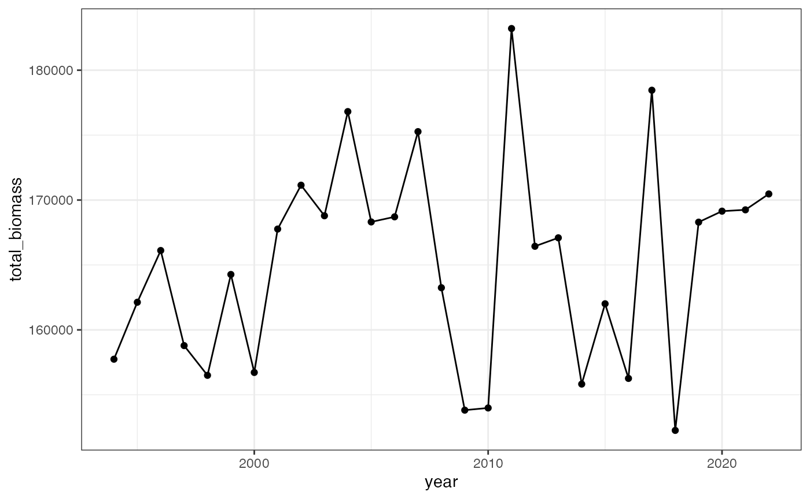
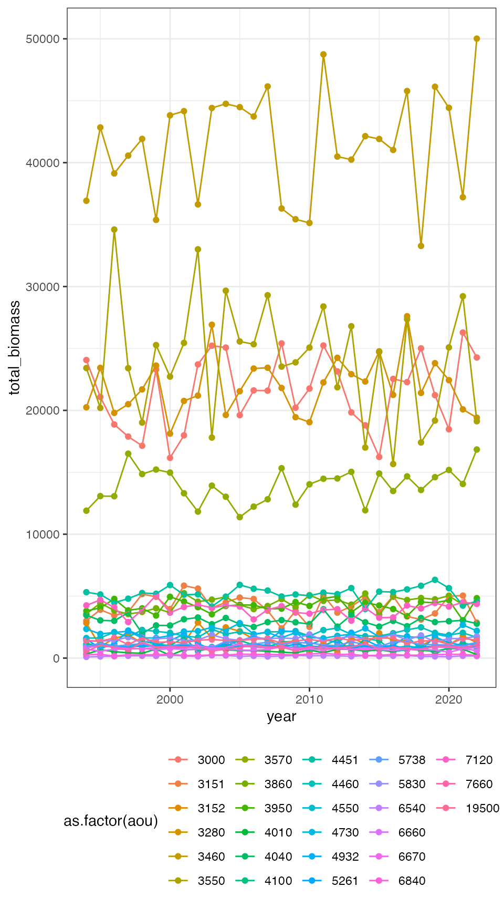
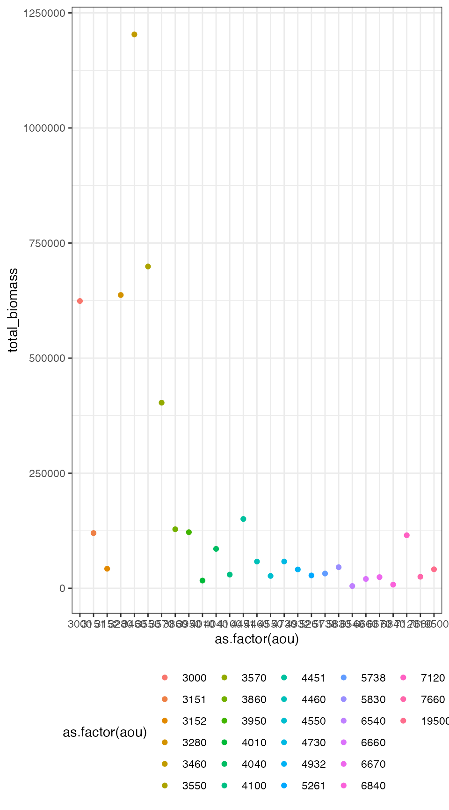
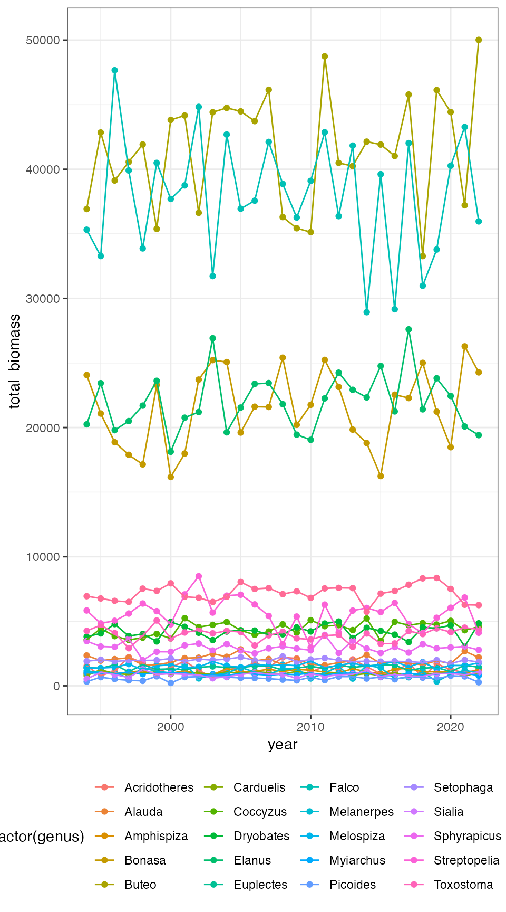

library(birdsize)
library(dplyr)
#>
#> Attaching package: 'dplyr'
#> The following objects are masked from 'package:stats':
#>
#> filter, lag
#> The following objects are masked from 'package:base':
#>
#> intersect, setdiff, setequal, union
library(ggplot2)
theme_set(theme_bw())
bbs_data <- demo_route_raw %>%
filter_bbs_survey()
set.seed(22)
a_community <- community_generate(bbs_data)
annual_summary <- a_community %>%
community_summarize(level = "year")
head(annual_summary)
#> # A tibble: 6 × 15
#> routedataid countrynum statenum route rpid year species_designator
#> <chr> <dbl> <dbl> <dbl> <dbl> <int> <chr>
#> 1 9009911011994 900 99 1 101 1994 aou
#> 2 9009911011995 900 99 1 101 1995 aou
#> 3 9009911011996 900 99 1 101 1996 aou
#> 4 9009911011997 900 99 1 101 1997 aou
#> 5 9009911011998 900 99 1 101 1998 aou
#> 6 9009911011999 900 99 1 101 1999 aou
#> # … with 8 more variables: total_abundance <int>, total_biomass <dbl>,
#> # total_metabolic_rate <dbl>, total_richness <int>,
#> # mean_individual_mass <dbl>, sd_individual_mass <dbl>,
#> # mean_metabolic_rate <dbl>, sd_metabolic_rate <dbl>
ggplot(annual_summary, aes(year, total_biomass)) +
geom_point() +
geom_line()
species_annual_summary <- a_community %>%
community_summarize(level = "species_and_year")
head(species_annual_summary)
#> # A tibble: 6 × 19
#> routedataid countrynum statenum route rpid year aou sim_species_id genus
#> <chr> <dbl> <dbl> <dbl> <dbl> <int> <int> <int> <chr>
#> 1 9009911011994 900 99 1 101 1994 3000 3000 Bona…
#> 2 9009911011994 900 99 1 101 1994 3151 3151 Stre…
#> 3 9009911011994 900 99 1 101 1994 3152 3152 Stre…
#> 4 9009911011994 900 99 1 101 1994 3280 3280 Elan…
#> 5 9009911011994 900 99 1 101 1994 3460 3460 Buteo
#> 6 9009911011994 900 99 1 101 1994 3550 3550 Falco
#> # … with 10 more variables: species <chr>, species_designator <chr>,
#> # total_abundance <int>, total_biomass <dbl>, total_metabolic_rate <dbl>,
#> # total_richness <int>, mean_individual_mass <dbl>, sd_individual_mass <dbl>,
#> # mean_metabolic_rate <dbl>, sd_metabolic_rate <dbl>
ggplot(species_annual_summary, aes(year, total_biomass, color = as.factor(aou))) +
geom_point() +
geom_line() +
theme(legend.position = "bottom")
species_summary <- community_summarize(a_community, level = "species")
head(species_summary)
#> # A tibble: 6 × 17
#> countrynum statenum route rpid aou sim_species_id genus species
#> <dbl> <dbl> <dbl> <dbl> <int> <int> <chr> <chr>
#> 1 900 99 1 101 3000 3000 Bonasa umbellus
#> 2 900 99 1 101 3151 3151 Streptopelia chinensis
#> 3 900 99 1 101 3152 3152 Streptopelia roseogrisea
#> 4 900 99 1 101 3280 3280 Elanus leucurus
#> 5 900 99 1 101 3460 3460 Buteo plagiatus
#> 6 900 99 1 101 3550 3550 Falco mexicanus
#> # … with 9 more variables: species_designator <chr>, total_abundance <int>,
#> # total_biomass <dbl>, total_metabolic_rate <dbl>, total_richness <int>,
#> # mean_individual_mass <dbl>, sd_individual_mass <dbl>,
#> # mean_metabolic_rate <dbl>, sd_metabolic_rate <dbl>
ggplot(species_summary, aes(as.factor(aou), total_biomass, color = as.factor(aou))) +
geom_point() +
theme(legend.position = "bottom")
For example, if you wanted to group by year and genus but not species:
annual_genera_summary <- community_summarize(a_community, level = "custom", id_vars = c("year", "genus"))
head(annual_genera_summary)
#> # A tibble: 6 × 11
#> year genus species_designa… total_abundance total_biomass total_metabolic…
#> <int> <chr> <chr> <int> <dbl> <dbl>
#> 1 1994 Acridot… aou 13 1539. 4103.
#> 2 1994 Alauda aou 62 2350. 8686.
#> 3 1994 Amphisp… aou 52 942. 4308.
#> 4 1994 Bonasa aou 45 24065. 41629.
#> 5 1994 Buteo aou 69 36921. 63859.
#> 6 1994 Carduel… aou 50 796. 3774.
#> # … with 5 more variables: total_richness <int>, mean_individual_mass <dbl>,
#> # sd_individual_mass <dbl>, mean_metabolic_rate <dbl>,
#> # sd_metabolic_rate <dbl>
ggplot(annual_genera_summary, aes(year, total_biomass, color = as.factor(genus))) +
geom_point() +
geom_line() +
theme(legend.position = "bottom")